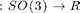
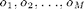
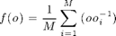

ODF Estimation from EBSD data
How to estimate an ODF from single orientation measurements.
| On this page ... |
| ODF Estimation |
| Automatic halfwidth selection |
| Effect of halfwidth selection |
ODF Estimation
The function calcODF implements ODF estimation from EBSD data in MTEX. The underlaying statistical method is called as kernel density estimation, which can be interpreted as a generalized histogram. To be more precise, let  be a radially symmetric, unimodal model ODF. Then the kernel density estimator for the individual orientation data  is defined as

The choise of the model ODF and in particular its halfwidth has a great impact in the resulting ODF. The following line computes the kernel density estimator for the first phase with kernel halfwidth set to 10*degree.
odf = calcODF(ebsd,'phase',1,'halfwidth',10*degree)
Automatic halfwidth selection
MTEX includes an automatic halfwidth selection algorithm which is called by the command calcKernel. A neccesary condition that this algorithm works is that the ebsd data are spatialy independend, as it is the case for very rough EBSD meassurements, i.e. only one measurement per grain.
% try to compute an optimal kernel psi = calcKernel(ebsd,'phase',1)
The above example the EBSD measurements are spatial dependend and the resulting halfwidth is to small. To avoid this problem we have to perfrom grain reconstruction first and then to estimate the halfwidth from the grains.
% grains reconstruction [grains ebsd] = segment2d(ebsd); % correct for to small grains grains = grains(grainsize(grains)>5); % compute optimal halfwidth from grains psi = calcKernel(grains,'phase',1) % compute the ODF with the kernel psi odf = calcODF(ebsd,'phase',1,'kernel',psi)
Once an ODF is estimated all the functionallity MTEX offers for ODF analysis and ODF visualisation is available.
plotpdf(odf,[Miller(1,0,0),Miller(1,1,0),Miller(1,1,1)],'antipodal','silent','position',[10 10 600 200])
Effect of halfwidth selection
As mentioned above a propper halfwidth selection is crucial for ODF estimation. The following simple numerical experiment illustrates the dependency between the kernel halfwidth and the estimation error.
Lets start with a model ODF and simulate some EBSD data.
ebsd = simulateEBSD(SantaFe,10000)
Next we define a list of kernel halfwidth ,
hw = [1*degree, 2*degree, 4*degree, 8*degree, 16*degree, 32*degree];
estimate for each halfwidth an ODF and compare it to the original ODF.
for i = 1:length(hw) odf = calcODF(ebsd,'halfwidth',hw(i),'silent'); e(i) = calcerror(SantaFe, odf); end
After visualizing the estimation error with observe that the estimation error is large if the halfwidth is chosen to small or to large. In this specific example the optimal halfwidth seems to be about 4 degree
plot(hw/degree,e) xlabel('halfwidth in degree') ylabel('esimation error')